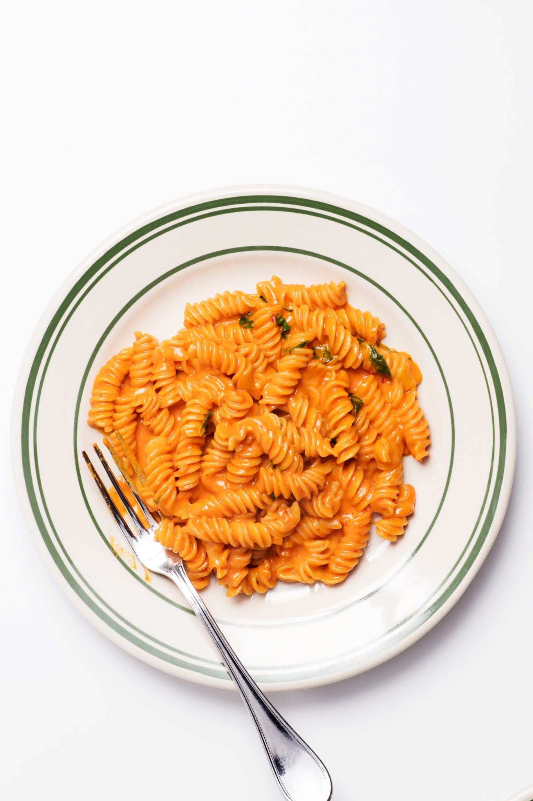

Spicy Fusili Vodka Pasta

Description
Inspired by the famous dish at Jon and Vinny's in LA, this dish is a great dish to make for a romantic date night. Another great thing about this dish is that it's relatively simple to make, which is excellent practice for any home cook. Creamy, tasty, and with a hint of heat this pasta is famous for a reason.
Ingredients
4 Servings
- 1/4 cup olive oil
- 1/2 shallot, finely chopped
- 1 small garlic clove, finely grated
- 1/2 cup tomato paste
- 2 tablespoons vodka
- 1 cup heavy cream
- 1 teaspoon crushed red pepper flakes
- Kosher salt, freshly ground pepper
- 1 pound fusili
- 2 tablespoons unsalted butter
- 1 ounce finely grate Parmesan, plus more for serving
- 1/4 cup chopped fresh basil
Steps
- Heat oil in a large skillet over medium. Add shallot and garlic and cook, stirring occasionally, until softened, about 5 minutes. Add tomato paste and cook, stirring occasionally, until paste is brick red and starts to caramelize, about 5 minutes. Add vodka and cook, stirring constantly, until liquid is mostly evaporated, about 2 minutes. Add cream and red pepper flakes and stir until well blended. Season with salt and pepper; remove from heat.
- Meanwhile, cook pasta in a large pot of boiling salted water, stirring occasionally, until al dente. Drain, reserving 1 cup pasta cooking liquid. Add pasta to skillet with sauce along with butter and ½ cup pasta cooking liquid. Cook over medium-low heat, stirring constantly and adding more pasta cooking liquid if needed, until butter has melted and a thick, glossy sauce has formed, about 2 minutes. Season with salt and pepper and add 1 oz. Parmesan, tossing to coat. Divide pasta among bowls, then top with basil and more Parmesan.
- Do Ahead: Vodka sauce can be made 5 days ahead; cover and chill.